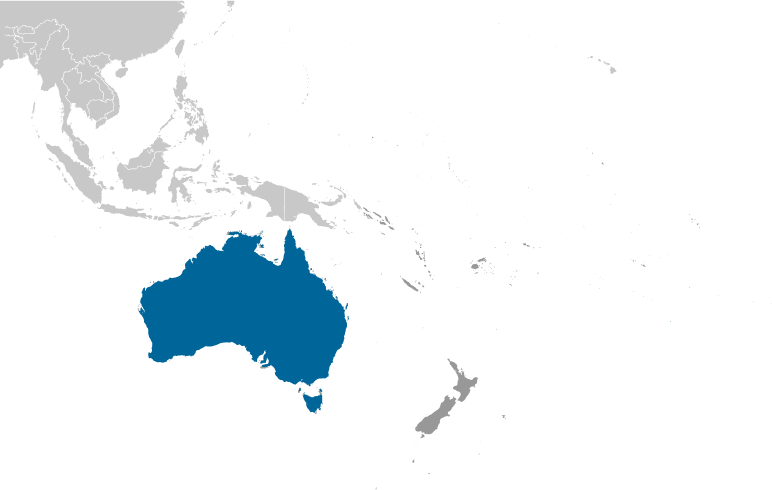
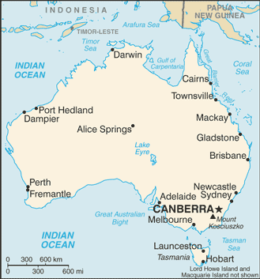
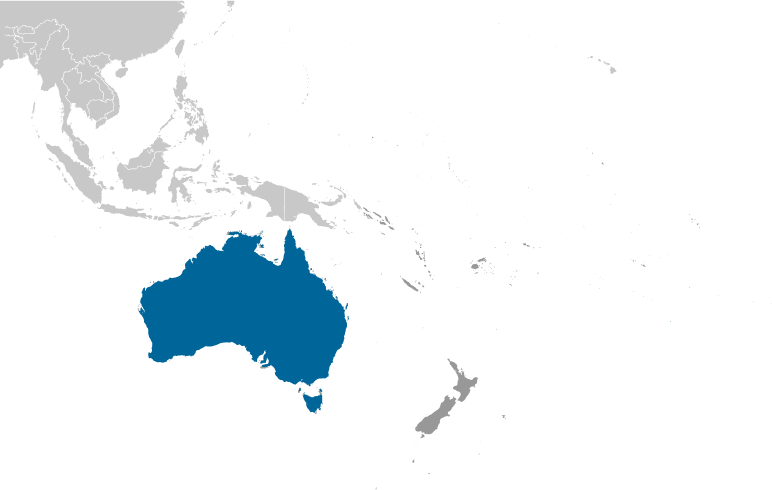
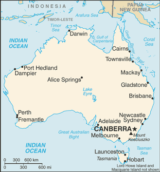

Australia-Oceania :: AUSTRALIA
Introduction :: AUSTRALIA
-
Prehistoric settlers arrived on the continent from Southeast Asia at least 40,000 years before the first Europeans began exploration in the 17th century. No formal territorial claims were made until 1770, when Capt. James COOK took possession of the east coast in the name of Great Britain (all of Australia was claimed as British territory in 1829 with the creation of the colony of Western Australia). Six colonies were created in the late 18th and 19th centuries; they federated and became the Commonwealth of Australia in 1901. The new country took advantage of its natural resources to rapidly develop agricultural and manufacturing industries and to make a major contribution to the Allied effort in World Wars I and II.In recent decades, Australia has become an internationally competitive, advanced market economy due in large part to economic reforms adopted in the 1980s and its location in one of the fastest growing regions of the world economy. Long-term concerns include an aging population, pressure on infrastructure, and environmental issues such as floods, droughts, and bushfires. Australia is the driest inhabited continent on earth, making it particularly vulnerable to the challenges of climate change. Australia is home to 10 per cent of the world's biodiversity, and a great number of its flora and fauna exist nowhere else in the world.
Geography :: AUSTRALIA
-
Oceania, continent between the Indian Ocean and the South Pacific Ocean27 00 S, 133 00 EOceaniatotal: 7,741,220 sq kmland: 7,682,300 sq kmwater: 58,920 sq kmnote: includes Lord Howe Island and Macquarie Islandcountry comparison to the world: 7slightly smaller than the US contiguous 48 states0 km25,760 kmterritorial sea: 12 nmcontiguous zone: 24 nmexclusive economic zone: 200 nmcontinental shelf: 200 nm or to the edge of the continental margingenerally arid to semiarid; temperate in south and east; tropical in northmostly low plateau with deserts; fertile plain in southeastmean elevation: 330 melevation extremes: lowest point: Lake Eyre -15 mhighest point: Mount Kosciuszko 2,228 mbauxite, coal, iron ore, copper, tin, gold, silver, uranium, nickel, tungsten, rare earth elements, mineral sands, lead, zinc, diamonds, natural gas, petroleumnote: Australia is the world's largest net exporter of coal accounting for 29% of global coal exportsagricultural land: 53.4%arable land 6.2%; permanent crops 0.1%; permanent pasture 47.1%forest: 19.3%other: 27.3% (2011 est.)25,500 sq km (2012)population is primarily located on the periphery, with the highest concentration of people residing in the southeast; a secondary population center is located in and around Perth in the west; of the States and Territories, New South Wales has, by far, the largest population; the interior, or "outback", has a very sparse populationcyclones along the coast; severe droughts; forest firesvolcanism: volcanic activity on Heard and McDonald Islandssoil erosion from overgrazing, industrial development, urbanization, and poor farming practices; soil salinity rising due to the use of poor quality water; desertification; clearing for agricultural purposes threatens the natural habitat of many unique animal and plant species; the Great Barrier Reef off the northeast coast, the largest coral reef in the world, is threatened by increased shipping and its popularity as a tourist site; limited natural freshwater resourcesparty to: Antarctic-Environmental Protocol, Antarctic-Marine Living Resources, Antarctic Seals, Antarctic Treaty, Biodiversity, Climate Change, Climate Change-Kyoto Protocol, Desertification, Endangered Species, Environmental Modification, Hazardous Wastes, Law of the Sea, Marine Dumping, Marine Life Conservation, Ozone Layer Protection, Ship Pollution, Tropical Timber 83, Tropical Timber 94, Wetlands, Whalingsigned, but not ratified: none of the selected agreementsworld's smallest continent but sixth-largest country; the largest country in Oceania, the largest country entirely in the Southern Hemisphere, and the largest country without land borders; the only continent without glaciers; population concentrated along the eastern and southeastern coasts; the invigorating sea breeze known as the "Fremantle Doctor" affects the city of Perth on the west coast and is one of the most consistent winds in the world
People and Society :: AUSTRALIA
-
23,232,413 (July 2017 est.)country comparison to the world: 56noun: Australian(s)adjective: AustralianEnglish 25.9%, Australian 25.4%, Irish 7.5%, Scottish 6.4%, Italian 3.3%, German 3.2%, Chinese 3.1%, Indian 1.4%, Greek 1.4%, Dutch 1.2%, other 15.8% (includes Australian aboriginal .5%), unspecified 5.4%note: data represent self-identified ancestry, over a third of respondents reported two ancestries (2011 est.)English 76.8%, Mandarin 1.6%, Italian 1.4%, Arabic 1.3%, Greek 1.2%, Cantonese 1.2%, Vietnamese 1.1%, other 10.4%, unspecified 5% (2011 est.)Protestant 23.1% (Anglican 13.3%, Uniting Church 3.7%, Presbyterian and Reformed 2.3%, Baptist 1.5%, Pentecostal 1.1%, Lutheran .7%, other Protestant .5%), Roman Catholic 22.6%, other Christian 4.2%, Muslim 2.6%, Buddhist 2.4%, Orthodox 2.3% (Eastern Orthodox 2.1%, Oriental Orthodox .2%), Hindu 1.9%, other 1.3%, none 30.1%, unspecified 9.6% (2016 est.)0-14 years: 17.8% (male 2,122,139/female 2,012,670)15-24 years: 12.79% (male 1,524,368/female 1,446,663)25-54 years: 41.45% (male 4,903,130/female 4,725,976)55-64 years: 11.83% (male 1,363,331/female 1,384,036)65 years and over: 16.14% (male 1,736,951/female 2,013,149) (2017 est.)total dependency ratio: 51.1youth dependency ratio: 28.5elderly dependency ratio: 22.6potential support ratio: 4.4 (2015 est.)total: 38.7 yearsmale: 37.9 yearsfemale: 39.5 years (2017 est.)country comparison to the world: 581.03% (2017 est.)country comparison to the world: 11912.1 births/1,000 population (2017 est.)country comparison to the world: 1657.3 deaths/1,000 population (2017 est.)country comparison to the world: 1195.5 migrant(s)/1,000 population (2017 est.)country comparison to the world: 22population is primarily located on the periphery, with the highest concentration of people residing in the southeast; a secondary population center is located in and around Perth in the west; of the States and Territories, New South Wales has, by far, the largest population; the interior, or "outback", has a very sparse populationurban population: 89.7% of total population (2017)rate of urbanization: 1.37% annual rate of change (2015-20 est.)note: data include Christmas Island, Cocos Islands, and Norfolk IslandSydney 4.505 million; Melbourne 4.203 million; Brisbane 2.202 million; Perth 1.861 million; Adelaide 1.256 million; CANBERRA (capital) 423,000 (2015)at birth: 1.06 male(s)/female0-14 years: 1.05 male(s)/female15-24 years: 1.05 male(s)/female25-54 years: 1.04 male(s)/female55-64 years: 0.98 male(s)/female65 years and over: 0.86 male(s)/femaletotal population: 1.01 male(s)/female (2016 est.)28.7 years (2014 est.)6 deaths/100,000 live births (2015 est.)country comparison to the world: 166total: 4.3 deaths/1,000 live birthsmale: 4.6 deaths/1,000 live birthsfemale: 3.9 deaths/1,000 live births (2017 est.)country comparison to the world: 184total population: 82.3 yearsmale: 79.8 yearsfemale: 84.9 years (2017 est.)country comparison to the world: 141.77 children born/woman (2017 est.)country comparison to the world: 15667.8%note: percent of women aged 18-45 (2011)9.4% of GDP (2014)country comparison to the world: 323.37 physicians/1,000 population (2013)3.9 beds/1,000 population (2010)improved:urban: 100% of populationrural: 100% of populationtotal: 100% of populationunimproved:urban: 0% of populationrural: 0% of populationtotal: 0% of population (2015 est.)improved:urban: 100% of populationrural: 100% of populationtotal: 100% of populationunimproved:urban: 0% of populationrural: 0% of populationtotal: 0% of population (2015 est.)0.1% (2016 est.)country comparison to the world: 10025,000 (2016 est.)country comparison to the world: 69<500 (2016 est.)29% (2016)country comparison to the world: 270.2% (2007)country comparison to the world: 1385.3% of GDP (2013)country comparison to the world: 56total: 20 yearsmale: 20 yearsfemale: 21 years (2014)total: 12.7%male: 13.9%female: 11.4% (2016 est.)country comparison to the world: 93
Government :: AUSTRALIA
-
conventional long form: Commonwealth of Australiaconventional short form: Australiaetymology: the name Australia derives from the Latin "australis" meaning "southern"; the Australian landmass was long referred to as "Terra Australis" or the Southern Landparliamentary democracy (Federal Parliament) under a constitutional monarchy; a Commonwealth realmname: Canberrageographic coordinates: 35 16 S, 149 08 Etime difference: UTC+10 (15 hours ahead of Washington, DC, during Standard Time)daylight saving time: +1hr, begins first Sunday in October; ends first Sunday in Aprilnote: Australia has three time zones6 states and 2 territories*; Australian Capital Territory*, New South Wales, Northern Territory*, Queensland, South Australia, Tasmania, Victoria, Western AustraliaAshmore and Cartier Islands, Christmas Island, Cocos (Keeling) Islands, Coral Sea Islands, Heard Island and McDonald Islands, Norfolk Island1 January 1901 (from the federation of UK colonies)Australia Day (commemorates the arrival of the First Fleet of Australian settlers), 26 January (1788); ANZAC Day (commemorates the anniversary of the landing of troops of the Australian and New Zealand Army Corps during World War I at Gallipoli, Turkey), 25 April (1915)9 July 1900; effective 1 January 1901; amended several times, last in 1977; note - a referendum to amend the constitution to reflect the Aboriginal and Torres Strait Islander Peoples Recognition Act 2013 held in 2017 was rejected (2017)common law system based on the English modelaccepts compulsory ICJ jurisdiction with reservations; accepts ICCt jurisdictioncitizenship by birth: nocitizenship by descent only: at least one parent must be a citizen or permanent resident of Australiadual citizenship recognized: yesresidency requirement for naturalization: 4 years18 years of age; universal and compulsorychief of state: Queen of Australia ELIZABETH II (since 6 February 1952); represented by Governor Gen. Sir Peter COSGROVE (since 28 March 2014)head of government: Prime Minister Malcolm TURNBULL (since 15 September 2015)cabinet: Cabinet nominated by the prime minister from among members of Parliament and sworn in by the governor generalelections/appointments: the monarchy is hereditary; governor general appointed by the monarch on the recommendation of the prime minister; following legislative elections, the leader of the majority party or majority coalition is sworn in as prime minister by the governor generaldescription: bicameral Federal Parliament consists of the Senate (76 seats; 12 members from each of the 6 states and 2 each from the 2 mainland territories; members directly elected in multi-seat constituencies by proportional representation vote; members serve 6-year terms with one-half of state membership renewed every 3 years and territory membership renewed every 3 years) and the House of Representatives (150 seats; members directly elected in single-seat constituencies by majority preferential vote; members serve terms of up to 3 years)elections: Senate - last held on 2 July 2016 (next to be held in 2019); House of Representatives - last held on 2 July 2016; this election represents a rare double dissolution where all 226 seats in both the Senate and House of Representatives are up for reelectionelection results: Senate - percent of vote by party - Liberal/National Coalition 35.2%, ALP 29.8%, the Greens 8.7%, Pauline Hanson's One Nation 4.3%, Nick Xenophon Team 3.3%, other 18.7%; seats by party - Liberal/National Coalition 30, ALP 26, The Greens 9, Pauline Hanson's One Nation 4, Nick Xenophon Team 3, other 4; House of Representatives - percent of vote by party - Liberal/National Coalition 42%, ALP 34.7%, The Greens 10.2%, Nick Xenophon Team 1.9%. Katter's Australian Party 0.5%, independent 2.8%, other 7.8%; seats by party - Liberal/National Coalition 76, ALP 69, The Greens 1, Katter's Australian Party 1, Nick Xenophon Team 1, independent 2highest court(s): High Court of Australia (consists of 7 justices, including the chief justice); note - each of the 6 states, 2 territories, and Norfolk Island has a Supreme Court; the High Court is the final appellate court beyond the state and territory supreme courtsjudge selection and term of office: justices appointed by the governor-general in council for life with mandatory retirement at age 70subordinate courts: subordinate courts: subordinate courts at the federal level: Federal Court; Federal Magistrates' Courts of Australia; Family Court; subordinate courts at the state and territory level: Local Court - New South Wales; Magistrates' Courts – Victoria, Queensland, South Australia, Western Australia, Tasmania, Northern Territory, Australian Capital Territory; District Courts – New South Wales, Queensland, South Australia, Western Australia; County Court – Victoria; Family Court – Western Australia; Court of Petty Sessions – Norfolk IslandAustralian Greens Party [Richard DI NATALE]Australian Labor Party [Bill SHORTEN]Country Liberal Party or CLP [Gary HIGGINS]Family First Party [Bob DAY]Katter's Australian Party [Bob KATTER]Liberal National Party of Queensland or LNP [Timothy NICHOLLS]Liberal Party [Malcolm TURNBULL]National Party of Australia [Barnaby JOYCE]Palmer United Party or PUP [Clive PALMER]business groups, environmental groups, social groups, trade unionsADB, ANZUS, APEC, ARF, ASEAN (dialogue partner), Australia Group, BIS, C, CD, CP, EAS, EBRD, EITI (implementing country), FAO, FATF, G-20, IAEA, IBRD, ICAO, ICC (national committees), ICCt, ICRM, IDA, IEA, IFC, IFRCS, IHO, ILO, IMF, IMO, IMSO, Interpol, IOC, IOM, IPU, ISO, ITSO, ITU, ITUC (NGOs), MIGA, NEA, NSG, OECD, OPCW, OSCE (partner), Pacific Alliance (observer), Paris Club, PCA, PIF, SAARC (observer), SICA (observer), Sparteca, SPC, UN, UNCTAD, UNESCO, UNHCR, UNMISS, UNMIT, UNRWA, UNTSO, UNWTO, UPU, WCO, WFTU (NGOs), WHO, WIPO, WMO, WTO, ZCchief of mission: Ambassador Joseph Benedict HOCKEY (since 28 January 2016)chancery: 1601 Massachusetts Avenue NW, Washington, DC 20036telephone: [1] (202) 797-3000FAX: [1] (202) 797-3168consulate(s) general: Atlanta, Chicago, Honolulu, Houston, Los Angeles, New York, San Franciscochief of mission: Ambassador (vacant); Charge d'Affaires James CAROUSO (since September 2016)embassy: Moonah Place, Yarralumla, Canberra, Australian Capital Territory 2600mailing address: APO AP 96549telephone: [61] (02) 6214-5600FAX: [61] (02) 6214-5970consulate(s) general: Melbourne, Perth, Sydneyblue with the flag of the UK in the upper hoist-side quadrant and a large seven-pointed star in the lower hoist-side quadrant known as the Commonwealth or Federation Star, representing the federation of the colonies of Australia in 1901; the star depicts one point for each of the six original states and one representing all of Australia's internal and external territories; on the fly half is a representation of the Southern Cross constellation in white with one small, five-pointed star and four larger, seven-pointed starsSouthern Cross constellation (composed of five stars: four large seven-pointed stars, one small five-pointed star), kangaroo, emu; national colors: green, goldname: "Advance Australia Fair"lyrics/music: Peter Dodds McCORMICKnote: adopted 1984; although originally written in the late 19th century, the anthem was not used for all official occasions until 1984; as a Commonwealth country, in addition to the national anthem, "God Save the Queen" is also played at Royal functions (see United Kingdom)
Economy :: AUSTRALIA
-
Following two decades of continuous growth, low unemployment, contained inflation, very low public debt, and a strong and stable financial system, Australia enters 2017 facing a range of growth constraints, principally driven by the sharp fall in global prices of key export commodities. Demand for resources and energy from Asia and especially China has stalled and sharp drops in current prices have impacted growth.The services sector is the largest part of the Australian economy, accounting for about 70% of GDP and 75% of jobs. Australia was comparatively unaffected by the global financial crisis as the banking system has remained strong and inflation is under control.Australia benefited from a dramatic surge in its terms of trade in recent years, although this trend has reversed due to falling global commodity prices. Australia is a significant exporter of natural resources, energy, and food. Australia's abundant and diverse natural resources attract high levels of foreign investment and include extensive reserves of coal, iron, copper, gold, natural gas, uranium, and renewable energy sources. A series of major investments, such as the US$40 billion Gorgon Liquid Natural Gas Project, will significantly expand the resources sector.Australia is an open market with minimal restrictions on imports of goods and services. The process of opening up has increased productivity, stimulated growth, and made the economy more flexible and dynamic. Australia plays an active role in the WTO, APEC, the G20, and other trade forums. Australia’s free trade agreement (FTA) with China entered into force in 2015, adding to existing FTAs with the Republic of Korea, Japan, Chile, Malaysia, New Zealand, Singapore, Thailand, and the US, and a regional FTA with ASEAN and New Zealand. Australia continues to negotiate bilateral agreements with India and Indonesia, as well as larger agreements with its Pacific neighbors and the Gulf Cooperation Council countries, and an Asia-wide Regional Comprehensive Economic Partnership that includes the 10 ASEAN countries and China, Japan, Korea, New Zealand and India.$1.188 trillion (2016 est.)$1.144 trillion (2015 est.)$1.105 trillion (2014 est.)note: data are in 2016 dollarscountry comparison to the world: 20$1.262 trillion (2016 est.)2.5% (2016 est.)2.4% (2015 est.)2.8% (2014 est.)country comparison to the world: 112$48,700 (2016 est.)$48,300 (2015 est.)$47,800 (2014 est.)note: data are in 2016 dollarscountry comparison to the world: 2921.9% of GDP (2016 est.)22.1% of GDP (2015 est.)23.9% of GDP (2014 est.)country comparison to the world: 70household consumption: 57.3%government consumption: 18.9%investment in fixed capital: 24.9%investment in inventories: -0.4%exports of goods and services: 19.5%imports of goods and services: -20.2% (2016 est.)agriculture: 3.6%industry: 26.5%services: 69.9% (2016 est.)wheat, barley, sugarcane, fruits; cattle, sheep, poultrymining, industrial and transportation equipment, food processing, chemicals, steel0.3% (2016 est.)country comparison to the world: 15512.74 million (2016 est.)country comparison to the world: 43agriculture: 3.6%industry: 21.1%services: 75.3% (2009 est.)5.7% (2016 est.)5.7% (2015 est.)country comparison to the world: 75NA%lowest 10%: 2%highest 10%: 25.4% (1994)30.3 (2008)35.2 (1994)country comparison to the world: 126revenues: $432.4 billionexpenditures: $457.7 billion (2016 est.)34.3% of GDP (2016 est.)country comparison to the world: 59-2% of GDP (2016 est.)country comparison to the world: 8946.6% of GDP (2016 est.)44.2% of GDP (2015 est.)country comparison to the world: 1091 July - 30 June1.3% (2016 est.)1.5% (2015 est.)country comparison to the world: 1013% (28 February 2013)4.35% (31 December 2010)note: this is the Reserve Bank of Australia's "cash rate target," or policy ratecountry comparison to the world: 1065.42% (31 December 2016 est.)5.58% (31 December 2015 est.)country comparison to the world: 131$243.1 billion (31 December 2016 est.)$229.7 billion (31 December 2015 est.)country comparison to the world: 18$1.415 trillion (31 December 2016 est.)$1.337 trillion (31 December 2015 est.)country comparison to the world: 12$2.098 trillion (31 December 2016 est.)$1.985 trillion (31 December 2015 est.)country comparison to the world: 13$1.187 trillion (31 December 2015 est.)$1.289 trillion (31 December 2014 est.)$1.366 trillion (31 December 2013 est.)country comparison to the world: 13$-33.31 billion (2016 est.)$-58.06 billion (2015 est.)country comparison to the world: 197$191.7 billion (2016 est.)$188.3 billion (2015 est.)country comparison to the world: 25coal, iron ore, gold, meat, wool, alumina, wheat, machinery and transport equipmentChina 30.5%, Japan 12.4%, US 6.5%, South Korea 6.1% (2016)$198.5 billion (2016 est.)$207.2 billion (2015 est.)country comparison to the world: 21machinery and transport equipment, computers and office machines, telecommunication equipment and parts; crude oil and petroleum productsChina 23.4%, US 11.5%, Japan 7.8%, Thailand 5.6%, Germany 5.3%, South Korea 4.3% (2016)$55.07 billion (31 December 2016 est.)$49.27 billion (31 December 2015 est.)country comparison to the world: 37$1.547 trillion (31 December 2016 est.)$1.538 trillion (31 December 2015 est.)country comparison to the world: 14$617.7 billion (31 December 2016 est.)$582.6 billion (31 December 2015 est.)country comparison to the world: 16$441.4 billion (31 December 2016 est.)$434.7 billion (31 December 2015 est.)country comparison to the world: 18Australian dollars (AUD) per US dollar -1.3442 (2016 est.)1.3442 (2015 est.)1.3291 (2014 est.)1.1094 (2013 est.)0.9695 (2012 est.)
Energy :: AUSTRALIA
-
electrification - total population: 100% (2016)237.9 billion kWh (2015 est.)country comparison to the world: 20223.6 billion kWh (2015 est.)country comparison to the world: 180 kWh (2016 est.)country comparison to the world: 1020 kWh (2016 est.)country comparison to the world: 12167.03 million kW (2015 est.)country comparison to the world: 1872.9% of total installed capacity (2015 est.)country comparison to the world: 980% of total installed capacity (2015 est.)country comparison to the world: 4310.9% of total installed capacity (2015 est.)country comparison to the world: 11616.1% of total installed capacity (2015 est.)country comparison to the world: 43289,700 bbl/day (2016 est.)country comparison to the world: 33213,600 bbl/day (2016 est.)country comparison to the world: 29339,500 bbl/day (2016 est.)country comparison to the world: 261.821 billion bbl (1 January 2017 es)country comparison to the world: 39472,100 bbl/day (2016 est.)country comparison to the world: 341.1 million bbl/day (2016 est.)country comparison to the world: 2160,290 bbl/day (2016 est.)country comparison to the world: 50564,300 bbl/day (2016 est.)country comparison to the world: 1467.2 billion cu m (2015 est.)country comparison to the world: 1346.99 billion cu m (2015 est.)country comparison to the world: 2434.06 billion cu m (2015 est.)country comparison to the world: 116.373 billion cu m (2015 est.)country comparison to the world: 321.989 trillion cu m (1 January 2017 es)country comparison to the world: 18385 million Mt (2013 est.)country comparison to the world: 18
Communications :: AUSTRALIA
-
total subscriptions: 8.18 millionsubscriptions per 100 inhabitants: 36 (July 2016 est.)country comparison to the world: 22total: 26.55 millionsubscriptions per 100 inhabitants: 115 (July 2016 est.)country comparison to the world: 39general assessment: excellent domestic and international servicedomestic: domestic satellite system; significant use of radiotelephone in areas of low population density; rapid growth of mobile telephonesinternational: country code - 61; landing point for the SEA-ME-WE-3 optical telecommunications submarine cable with links to Asia, the Middle East, and Europe; the Southern Cross fiber-optic submarine cable provides links to NZ and the US; satellite earth stations - 10 Intelsat (4 Indian Ocean and 6 Pacific Ocean), 2 Inmarsat, 2 Globalstar, 5 other (2015)the Australian Broadcasting Corporation (ABC) runs multiple national and local radio networks and TV stations, as well as Australia Network, a TV service that broadcasts throughout the Asia-Pacific region and is the main public broadcaster; Special Broadcasting Service (SBS), a second large public broadcaster, operates radio and TV networks broadcasting in multiple languages; several large national commercial TV networks, a large number of local commercial TV stations, and hundreds of commercial radio stations are accessible; cable and satellite systems are available (2009).autotal: 20,288,409percent of population: 88.2% (July 2016 est.)country comparison to the world: 28
Transportation :: AUSTRALIA
-
number of registered air carriers: 11inventory of registered aircraft operated by air carriers: 175annual passenger traffic on registered air carriers: 69,294,187annual freight traffic on registered air carriers: 1,887,295,820 mt-km (2015)VH (2016)480 (2013)country comparison to the world: 16total: 349over 3,047 m: 112,438 to 3,047 m: 141,524 to 2,437 m: 155914 to 1,523 m: 155under 914 m: 14 (2017)total: 1311,524 to 2,437 m: 16914 to 1,523 m: 101under 914 m: 14 (2013)1 (2013)condensate/gas 637 km; gas 30,054 km; liquid petroleum gas 240 km; oil 3,609 km; oil/gas/water 110 km; refined products 72 km (2013)total: 36,967.5 kmbroad gauge: 3,727 km 1.600-m gauge (372 km electrified)standard gauge: 18,727 km 1.435-m gauge (650 km electrified)narrow gauge: 14,513.5 km 1.067-m gauge (2,075.5 km electrified) (2014)country comparison to the world: 7total: 823,217 kmpaved: 356,343 kmunpaved: 466,874 km (2011)country comparison to the world: 92,000 km (mainly used for recreation on Murray and Murray-Darling River systems) (2011)country comparison to the world: 42total: 41by type: bulk carrier 8, cargo 7, liquefied gas 4, passenger 6, passenger/cargo 6, petroleum tanker 5, roll on/roll off 5foreign-owned: 17 (Canada 5, Germany 2, Singapore 2, South Africa 1, UK 5, US 2)registered in other countries: 25 (Bahamas 1, Dominica 1, Fiji 2, Liberia 1, Netherlands 1, Panama 4, Singapore 12, Tonga 1, UK 1, US 1) (2010)country comparison to the world: 77major seaport(s): Brisbane, Cairns, Darwin, Fremantle, Geelong, Gladstone, Hobart, Melbourne, Newcastle, Port Adelaide, Port Kembla, Sydneydry bulk cargo port(s): Dampier (iron ore), Dalrymple Bay (coal), Hay Point (coal), Port Hedland (iron ore), Port Walcott (iron ore)container port(s) (TEUs): Brisbane (1,152,000), Melbourne (2,638,000), Sydney (2,330,000)(2015)LNG terminal(s) (export): Darwin, Karratha, Burrup, Curtis Island
Military and Security :: AUSTRALIA
-
2% of GDP (2016)1.98% of GDP (2015)1.8% of GDP (2014)1.68% of GDP (2013)1.7% of GDP (2012)country comparison to the world: 50Australian Defense Force (ADF): Australian Army, Royal Australian Navy (includes Naval Aviation Force), Royal Australian Air Force, Joint Operations Command (JOC) (2013)17 years of age for voluntary military service (with parental consent); no conscription; women allowed to serve in most combat roles, except the Army special forces (2013)
Transnational Issues :: AUSTRALIA
-
In 2007, Australia and Timor-Leste agreed to a 50-year development zone and revenue sharing arrangement and deferred a maritime boundary; Australia asserts land and maritime claims to Antarctica; Australia's 2004 submission to the Commission on the Limits of the Continental Shelf extends its continental margins over 3.37 million square kilometers, expanding its seabed roughly 30 percent beyond its claimed EEZ; all borders between Indonesia and Australia have been agreed upon bilaterally, but a 1997 treaty that would settle the last of their maritime and EEZ boundary has yet to be ratified by Indonesia's legislature; Indonesian groups challenge Australia's claim to Ashmore Reef; Australia closed parts of the Ashmore and Cartier reserve to Indonesian traditional fishingrefugees (country of origin): 9,217 (Afghanistan); 6,128 (Iran) (2016)Tasmania is one of the world's major suppliers of licit opiate products; government maintains strict controls over areas of opium poppy cultivation and output of poppy straw concentrate; major consumer of cocaine and amphetamines